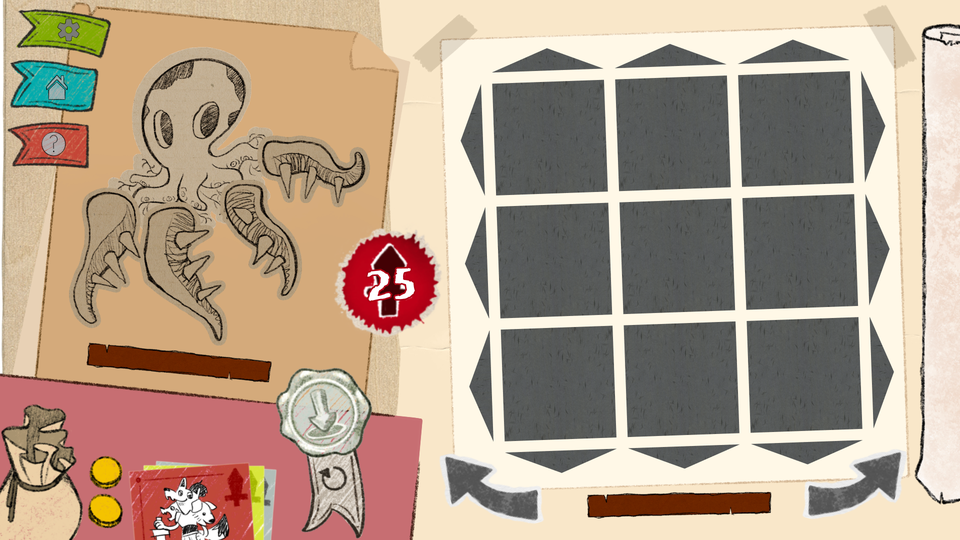

48 小时游戏创作 · 主题「位置」
点选角色播放动作，打开原画可以逐帧查看。
拖动纸片可以叠放，移开卡牌可看到下面的商店。

CARDINAL 是 Moray Game Jam 的团队项目。团队在 48 小时内围绕「位置」主题，探索放置玩法与肉鸽卡组构建相结合的游戏 DEMO。我负责界面与游戏美术设计。
项目把卡牌、棋盘、路线图、钱币和按钮设计成桌面上的手绘纸片。战斗、地图、事件与商店界面分别组织对手状态、路线选择、事件选项和商品信息。
我完成了 15 张卡牌和 3 个 Boss 的动画绘制。页面以 UI Mockup、角色动效和拆分组件展示设计成果；交互用于探索这些界面元素。